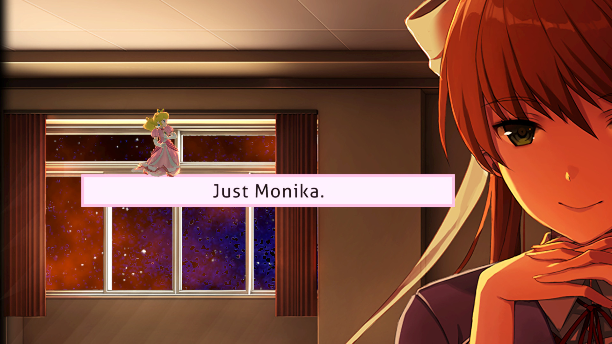

Сайт-проект об индустрии Визуальных Новелл
Жанр зародился в Японии в 1980-х годах и изначально назывался «Sound Novel» (звуковые новеллы) или «ADV» (приключения). Первые игры были графически простыми, но цепляли сильными детективными и романтическими сюжетами.
В 2000-х жанр вышел на мировой уровень. Появились культовые игры вроде Clannad, Fate/stay night и Steins;Gate. Позже настоящим культурным феноменом стала игра Doki Doki Literature Club, которая показала, что новеллы могут быть не только про романтику, но и держать в сильном психологическом напряжении.
Сегодня жанр активно развивается на смартфонах и ПК, а авторы со всего мира (включая талантливых украинских инди-авторов) создают уникальные истории в самых разных сеттингах: от фэнтези до киберпанка.
